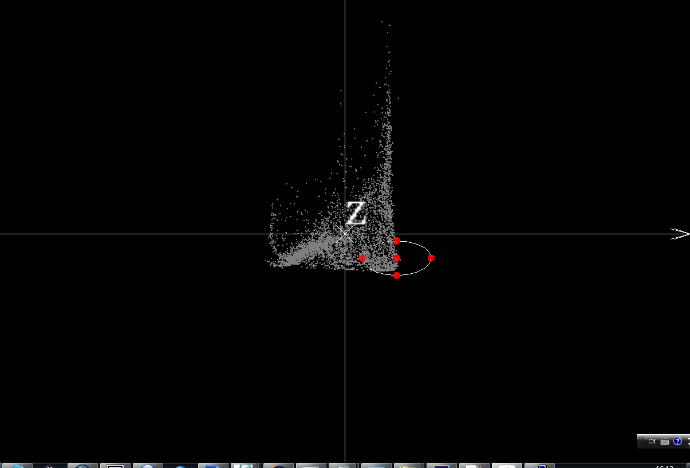

Generate a virtual species via drawing an ellipsoid
This section shows how to generate a virtual species via drawing an ellipse/ellipsoid based on BC we generated at " Create a BC" section.
In order to display the function intuitively, we used the BC generated by standardized BIO1 (Annual Mean Temperature) and BIO12 (Annual Precipitation). We try to generate three virtual species in the different localities, map them to the geospatial.
After we generate these three Ns in NicheA, we can find three "present.tiff" raster files in each N folder. After opening them in ArcGIS, we can get the Ns in G space. Fig. 6 shows the mapped Ns, which N No.1 (bottom-left) is in blue, N No.2 (bottom-right) is in yellow, and N No.3 (top-right) is in green. Because we generate BC based on BIO1 and BIO12, the x axis represents "Annual Mean Temperature" and y axis is "Annual Precipitation". Therefore the points on the bottom-left of BC (N No.1) stand for the cold-dry environment. Most of the areas in blue which are the N No.1 in G space lie in the north of the world (cold and dry areas). The other two Ns show the same pattern.
Note:
All the Ns generated in this section can be downloaded via this link.
